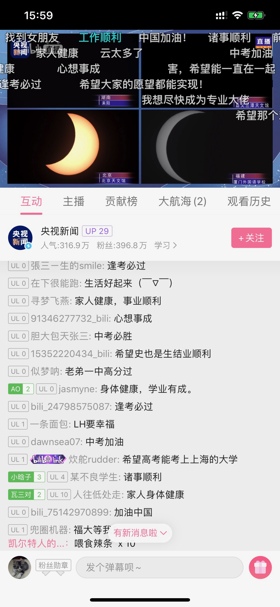
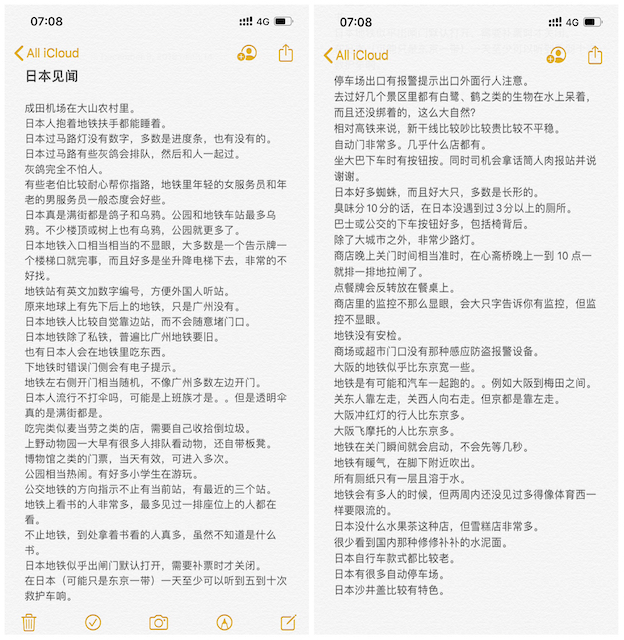
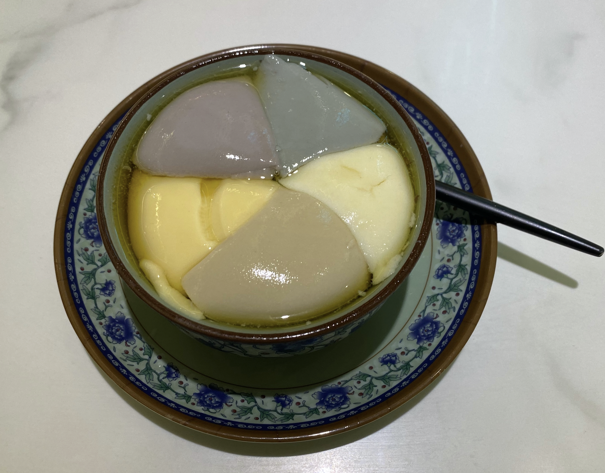

朝顔
如果你想说，那我就在听．
🙁昨晚梦见了你在哭，然后靠在了我的肩膀上……
四年前的今天，是研究生的毕业照．
以前公司的办公室、会议室有一些装饰，其中有一些就是英文鸡汤．有一间桌球室旁边的会议室里面有就贴了一句：Start before you're ready．
然而在更早的时候，在我大学毕业去那间公司的时候，CEO已经经常跟我说这句话．我总是觉得自己做不到，没准备好，他总是跟我说要边工作边学习成长，而不是停在那里等准备好了现开始．第二次回到公司的时候，有一个同事，总是觉得自己没有系统学习过金融，总是觉得自己工作没做好的最大原因是这个．那时候的我已经有点大概明白．未知和问题就是无处不在，但不能因此而停滞不前，办法总比问题多……总是想准备好了再出发，大概是学数学的人的通病，正如没理解一个定理就不敢用来证明一样．
回来以后，我觉得有点累了．不过，スッキリした．
昨晚梦见了你．不知道为什么叫我参加一个酒店定位比赛，我拿起手机点开仔细一看，这个时候闹钟正好弹出通知，顺手点掉，我又拿起手机点开仔细一看，原来没有．
端午快乐(ankang)．
有谁像我一样的无聊看着飘摇的树叶发呆．大概上了年纪才会习惯留意花开花落．以前小时候看到漂亮的花花草草，就会“哇，好漂亮”、“哇，这个好好看”……秋天的时候，落叶一片一片的挑，一片一片的捡，挑纹理最清晰最好看的，夹在书里，静待有一天它褪成只有网状的脉络．大概那是对自然最朴素的封存．
现在只是看着它在夏风中轻轼地摆动，偶尔掉下一片，也没有想去捡．我只是看着摇晃的枝头，听着唦唦的摩擦声，想着心里的人，发着自己的呆．虽然人们一直在破坏这个星球，但是我觉得，自然从不会自己老去．最后毁灭的会是我，或者人类．
五个月快乐． 一个月快乐．对了，“傍”（这个字）读bong6，也读pong4．
大学的毕业照是冬天照的，12月10日，没有记错的话．
幼儿园毕业的时候，……，都已经忘记了．
小学毕业的时候，大家都在互相写着同学录，那个年代还流行这种东西．也许是为了给收获的第一份友谊赋予简单而又特别的意义，大家对同学录的热情都十分高涨，以至于上课的时候都在认真写着、画着．那时候英语老师是班主任，她也没有要没收还是什么的，只是对我们说了一句：很快你们就会发现，以后会遇到一批又一批的新朋友，然后，旧的就会慢慢淡忘．那时总是觉得有太多的东西可以天长地久，更何况友谊．现在回首，老师毕竟是老师，现在还联系的小学同学，数起来的确不超过5个手指．
初中毕业的时候，对毕业没有显示像小学的时候一样的热情．课程实在太轻松．中考虽然只考了全区第66名，错失3年免学费的机会．但是，当发现能够跟自己的好朋友升到同一间中学的时候，有点期待也有点坦然．对比小学毕业的时候，至少对什么是友谊有了一点理解．不再像小学毕业的时候只会解方程、写中心思想．对怎样、和谁生活有了一点期许．现在回首，那些一起打闹的日子，实在太宝贵，也不复再来．
高中毕业的时候，除了伤痛就是一片空白．导师对我有着很高的期待，而我在考完试到出成绩，都没有再联系过他．我大概是他最差劲的学生．肆意沉浸在伤痛之中，似乎就是对自己最好的交待．大一的有一天，我回到了高中，找到了他．驻足在课室外，听了10分钟，然后就下课了，之后课间的10分钟里，说过什么，大多我也不记得了．只记得一句：有些东西没有你想象中那么的重要，只要目标还在，你只是走了一条不同的路．积压了一年多的愧疚，与带给老师的失望，一下就爆发出来．泪水在眼里打转，但强忍着没有让它掉下来．相比考了一份不满意的答卷，大概一直选择沉默与一蹶不振更令他对眼前这个曾经引以为傲的学生失望．
大学毕业的时候，一个人抬了几箱行李，坐公交来到广州．年龄的增加，更让人明白悲欢离合是那么的理所当然．毕业典礼当晚，大家喝的喝，吃的吃，说的说，似乎一切都要有个完美的终点，才算对生活在一起的四年有所交待．然而，相比以前，毕业这件事变得更像一个仪式．正如歌里唱的：当你踏上月台，从此一个人走，我只能深深地祝福你．好好道个别，从此各自安好．毕业照是冬天照的，那天的阳光很温暖．我把高中和初中玩得好快的朋友，都叫来了．这个我那么不喜欢的地方，离开后竟然有点不值得．那个时候也流行一句话：很多人的出现，只是为了给你上一课，然后匆匆离开．大概这么认为的人，可以显得洒脱一点．
研究生毕业的时候，特意找了大学毕业时一起拍毕业照的好友来拍毕业照．特意排成了同年一样的位置，还摆出一样的动作．过后来看的时候，觉得实在太肤浅了．笑容再也不会是以前的笑容，摆拍就是摆拍．到那时候，毕业、前程、友谊什么的，已经不用再去想再去强调了．成长就是用莫名其妙的期待，换取年龄数字的增加．当明白什么什么东西，就是怎么怎么一回事的时候，毕业这件事就变得相当乏味．
150天快乐，今天就不给你说恐怖的事情了．想读懂你的每一个表情，成为最懂你的人．
夏至快乐，今天终于可以跟你说我们迎来了夏天．

发现了两件事情：
- 在山里碰到的虫子数量没有你说过的“好柱”数量多．
- “检”这个字原来读gim2．
医学生是不是都不怕老鼠、毛毛虫什么的．想起你看到蝉的shiti跟毛毛虫的时候，真是淡定得有点可爱．
不知不觉的，明天又周末了．
发现天鹅两只．

Figure 2: 我都开始佩服自己的想象力了……
一直觉得没有蓝天和白云的不配称作晴天．每次看到白云朵朵的时候，最先想到的是日本和深圳．两个都是近海的地方，所以经常能看到一片又一片的白云．
深圳呆的那段日子其实不是特别开心，但是，在飞亚达大厦的高层里，最喜欢的就是在窗边远眺蓝天白云，以及享受夏天里暴雨来临时电闪雷鸣所带来的冲击．那种就算世界要塌下，也又与我何干呢的感觉，真好．
而现在，再也没遗世而独立那么高的觉悟，看看这蓝天白云，也是挺好的．
我也想成为你的太阳，照亮你的未来．
听说奈良有一间全日本可以排到前50的拉面店，师傅是从京都学艺回来的．去了两次都没注意到，有点可惜了．想带喜欢的人去吃．还错过了若草山的风光．遗憾这东西，总是越挖越多．或许也才有了下一次去的欲望．
只是第一次去日本的时候，像小孩冒险一样，那样的日子不会再有了．

出门之前提醒自己，语速要放慢．结果还是说得超快，果然一激动起来就装不了斯文……
每次都说超多，总觉得说不完．

回去艺苑南路吃了以前午饭吃完之后经常会去吃的豆腐花．
原来是一家古老的凉茶糖水店，现在已经拆了．开始有点失望．然后往回走的时候发现原来店子迁到了路口的前面，但是跟另一个饭馆合并了．还是一家四川饭馆．店面一点也认不出来了，凉茶也不卖了．

如常点了一碗，发现没有以前的好吃了．豆腐花也居然弄裂了．
我大概是高一的时候才喜欢上猫的．高一的时候沉迷网游，把吃饭的钱拿来买游戏的点卡了．然后没钱吃饭……于是，就骑车去一个同学家蹭饭然后再一起回来晚自修．他家里一只非常普通的中华田园猫．我们一起吃饭，一起看游戏的视频，然后，那只猫总会非常乖地趴在大腿上小憇，不吵也不闹．以前没喜欢猫的时候，也没见过发狂的猫，也许是第一次接触就是这么乖的，所以一直也没怎么怕过猫．有些人不怎么喜欢中国田园猫这么普通的猫，喜欢英短、美短、布偶之类．我倒是有点相反．虽然猫都很可爱（除了没毛的暂时还不能接受之外），但是越是普通的猫，看着就越在她身上看到可爱．跟之前发你发的宿舍的猫一样，也是非常普通，但我一点也不觉得她不可爱．这又是一段不学习，沉迷游戏的往事．
我查了一下聊天记录，很确定我没有说过静若处子，动若脱兔……这都能猜到诶．
昨晚又做了一个奇葩的梦．
不知道为什么我会扛着一张棉被，跟一个不认识的人走在路上．走到了一条很宽的桥的时候，突然狂风大作，桥开始摇晃起来．我扛着卷起来的棉被，有点站不稳了．天空接着变成紫色，那些云开始快速地移动并扭曲着，跟电视里那种突然其来的风起云涌一样．
我左手用力把棉被扛在肩膀上并稳住身子，右手从口袋里掏出手机，对着天空想给你拍一张照……（这是你唯一出现的地方）
（至于旁边那个人是谁，我也不知道，但是我叫“老师”，也不知道为什么他会和我一起走）
我昨晚梦见你给我打分了……
那个你明知道，还问……😕
今天在朋友圈看到了一条朋友圈说：
才突然意识到，N年前的今天，自己正在高考……
看完以后，我才突然意识到，N年前的今天，自己正在高考……
除了上次跟你说的，高考的印象零零星星就只剩下：数学老师说前面的填空选择不能丢分，不然上不了一百四，真的不会的时候就选A吧．以及，在考场遇到了一个初中同学，互相寒暄了几句……
突然想起一件有意思而又无聊的事．我不是说过曾经喜欢写东西，后来高三的时候就不喜欢了．因为越到后面，发现老师越要求我们写的东西像模板，实在太没意思了．我也忘了是什么原因，也可能是斗气，有一段时间特别喜欢王昭君．对的，就是那个大美女．我去看遍了所有关于她的故事与诗词．那时候CCTV中午还会播一些关于历史的百家讲坛什么的，特别喜欢看．课间的时候还会跟同桌洗脑，宣扬昭君的故事与情怀．那应该是我这辈子离历史最近的一次了……
在我与作文决裂之后的每一次考试里，我总是用尽一切办法把昭君引进我的作文里．什么题材都能扯两句关于昭君的诗句．以至于最后被语文老师抓去谈话说我江郎才尽什么……到高考语文那天，作文是关于什么我已经不记得了，但我记得的是，那是我最后一次把昭君用到了我的文字上．而且语文也没有因为这个而考得不好．
现在关于昭君的大部分我也忘记了，唯一记得的是，当年最朗朗上口的两句“传教”诗：
一去紫台连朔漠，独留青冢向黄昏．
我回家翻了一翻，把香蕉船的照片给找到了，回去给你看一下．虽然有点模糊，不过还是能看得到脸的……另外还找到了几张小时候头发长的时照片，丑得我根本认不得出来……
下午一直在响闷雷，雨却没有能下出来，不知道你那里是不是也是这样．听说到9号才会天气转好，一定要转好啊．
之前都是不记得上传，或者因为网络不好上传不了．而现在，是我没上传．尤其这几天，你快要考试了．不知道万一你看了对你有没有什么影响，尽管可能没有．
除此之外，还有一点就是：你看了我之前写的一大段话．这里，可以说是我最毫无保留的地方了，不管什么话，都敢在这里说，一切一切．包括不敢在你面前说的．上次我刚写完，没想到你就看到了，而且还那么快．我写之前也没想到过会写那么多，其实还有很多．那几天正好不知道你发生了什么，心里一是担心，二是有点焦虑．不小心就洋洋洒洒废话一大堆．
不知道你记不记得我第一次送你这“礼物”的时候跟你说，不管你有没有看，都不要跟我说．所以，在后面无论多少次向你推销过之后，我都怀着不知道你有没有看，但非常期待你会看到的心情在写这“情书”．可以说，直到你上次跟我说了，我才知道，原来你“至少”看过．
那天我有两件非常开心的事情，一是，我终于把我自己的一切包括内心最软弱和曾经最不堪的一面都在“你面前”展现出来了，是的，我不怕，在你面前不怕．二是，你看到了．我很开心原来你有看（过）．真的非常非常开心，非常非常……（没词了）
（你问我你父母会不会在我这里印象很差，其实，相对来说，不知道你有没有看完之后更觉得我父母更像洪水猛兽……至少曾经看起来是，哈哈）
写到这一行的时候我又不知道想写什么……我不想因为今天的胡言乱语，你“又”变得不再这里看，也不想你有压力（千万不要……）．我都觉得自己好矛盾．看完上面6段话，都不知道自己想啥．
有时候就会这样，自己毫无保留的时候，难免有点不安．毕竟人心都是肉做，人也是动物，就免不过有自我保护意识．我跟你说的话，我非常肯定跟你说，我从没有跟别人说过．是的，他们参与了我过往的经历，见证了我的喜怒哀乐，但没有人知道我是怎么想的（比如不去复读）．我坦白地告诉你，我恐慌了半天，现在不会了．能跟你说，你也愿意看，我很高兴．不过你看了我的巨大秘密，要负责任哦😏．
这样的一个雨夜，真的特别想你，尤其快三天没说话．我看了一下以前说有多喜欢你，现在又在想有多喜欢你．以前或者会给个数字，而现在，数字是多少我已经给不出了，就是很喜欢．喜欢得不得了．喜欢得想马上跟你爸理论一翻（就像怼我爸要喝酒的时候一样），不是我不怕，是我敢．
是的，偶尔会蹦出来这样天真的想法．想法是天真的，但情感跟行为不是．
今天回家我妈跟我说，渡车船停运了．
今晚又被前同事约了出去，不过不是上次那一个．吃饭的时候我在想，今晚一定不能发朋友圈．如果你今晚不知道抽什么风找我，那我一定告诉你，我在！
最近两天在想什么时无意义的事情，想起了一个朋友说的一句话．跟着别人的游记去了一个地方游玩，发现一点儿都不好玩．我就笑着，那明知道你还去啊．
“回到的时候至少可以跟别人说，那里不好玩，让别人不要再去了．”
这就是这次无意义旅游的一个意义．
3点就开始等下班了……是什么体验……
这几天让你有点晚睡了，不知道你有没有休息好．每次都不舍得让你晚睡，也每次都不舍得让你因为休息不好而疲倦，或者影响你复习的状态．我想我还是得消停几天．以前都没觉得蝉叫得这么明显，现在我感觉我经常都能听得到，然后就想起跟你一起散步的那短暂的时光．
《低配版Educated》
太长了，放这里了．